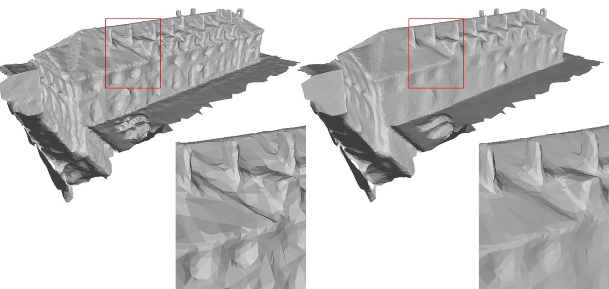
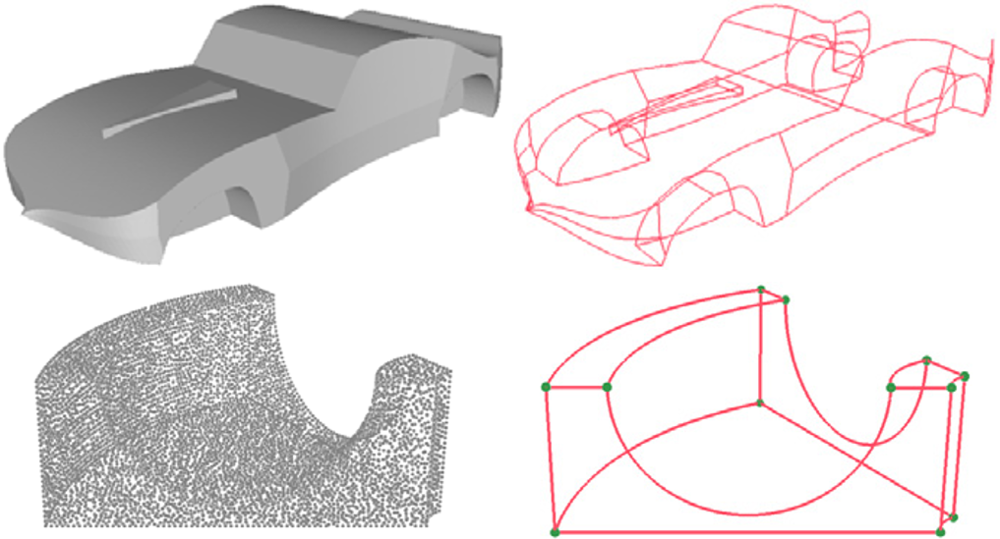
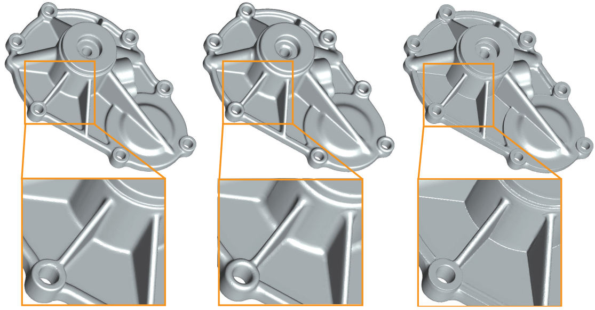
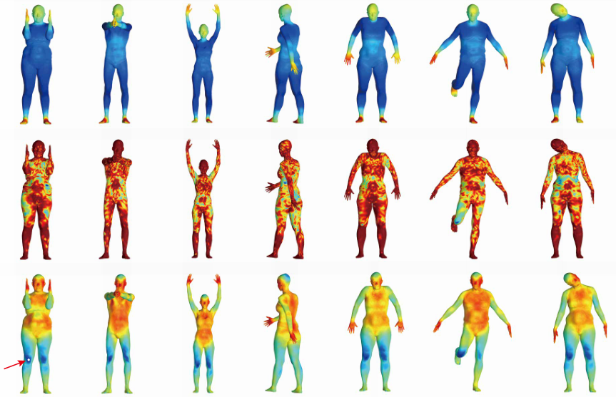
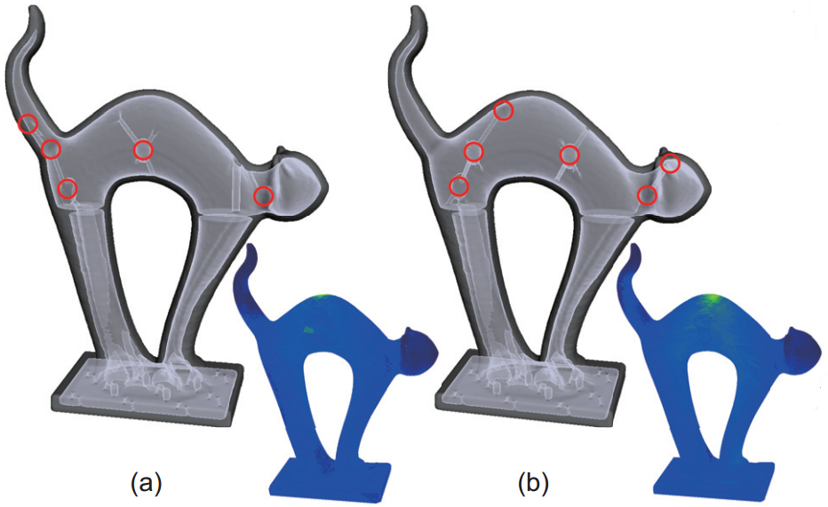
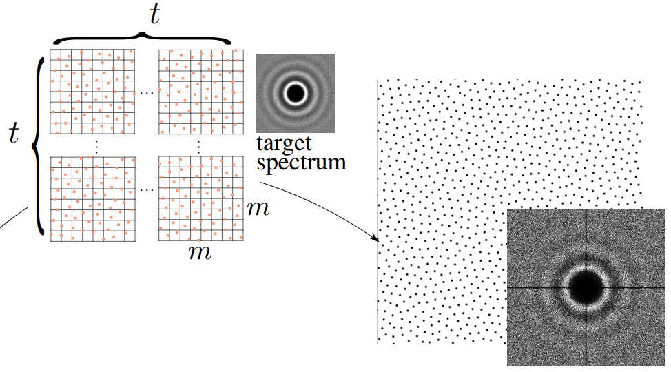

RC-Net: Row&Column Net with Text Feature for Deep Parsing Floor Plan Images
RC-Net: Row&Column Net with Text Feature for Deep Parsing Floor Plan Images Teng Wang, Weiliang Meng, Zhengda Lu, Jianwei Guo*, Jun Xiao*, Xiaopeng Zhang
Journal of Computer Science and Technology (Proc. CVM), 2023.
[pdf]
(# Joint first authors, * Corresponding author)
Fast Building Instance Proxy Reconstruction for Large Urban Scenes
Jianwei Guo, Haobo Qin, Yinchang Zhou, Xin Chen, Liangliang Nan, Hui Huang*
IEEE Transactions on Pattern Analysis and Machine Intelligence, to appear, 2024.
[pdf]
[suppl]
[code]
SfmCAD: Unsupervised CAD Reconstruction by Learning Sketch-based Feature Modeling Operations
Pu Li, Jianwei Guo*, Huibin Li, Bedrich Benes, Dong-Ming Yan
IEEE Conference on Computer Vision and Pattern Recognition (CVPR), 2024.
[pdf]
[suppl]
[code]
SVDTree: Semantic Voxel Diffusion for Single Image Tree Reconstruction
Yuan Li, Zhihao Liu, Bedrich Benes, Xiaopeng Zhang, Jianwei Guo*
IEEE Conference on Computer Vision and Pattern Recognition (CVPR), 2024.
[pdf]
[suppl]
[code]
UnionFormer: Unified-Learning Transformer with Multi-View Representation for Image Manipulation Detection and Localization
Shuaibo Li, Wei Ma, Jianwei Guo, Shibiao Xu, Benchong Li, Xiaopeng Zhang
IEEE Conference on Computer Vision and Pattern Recognition (CVPR), 2024.
[pdf]
[suppl]

ResGEM: Multi-scale Graph Embedding Network for Residual Mesh Denoising
Ziqi Zhou, Mengke Yuan, Mingyang Zhao, Jianwei Guo, Dong-Ming Yan
IEEE Transactions on Visualization & Computer Graphics, Early Access, 2024.
[pdf]
[code]
Layout-Aware Single-Image Document Flattening
Pu Li, Weize Quan, Jianwei Guo*, Dong-Ming Yan
ACM Transactions on Graphics, 43, 1, Article 9, 2023.
[pdf]
[suppl]
[code & dataset]
TwinTex: Geometry-aware Texture Generation for Abstracted 3D Architectural Models
Weidan Xiong, Hongqian Zhang, Botao Peng, Ziyu HU, Yongli Wu, Jianwei Guo, Hui Huang
ACM Transactions on Graphics (Proc. SIGGRAPH Asia), 2023.
[pdf]
[suppl]
[Project page]
Line-Based 3D Building Abstraction and Polygonal Surface Reconstruction From Images
Jianwei Guo, Yanchao Liu, Xin Song, Haoyu Liu, Xiaopeng Zhang, Zhanglin Cheng
IEEE Transactions on Visualization & Computer Graphics, Early Access, 2023.
[pdf]
[suppl]
Surface and Edge Detection for Primitive Fitting of Point Clouds
Yuanqi Li, Shun Liu, Xinran Yang, Jianwei Guo*, Jie Guo, Yanwen Guo*
Proceedings of SIGGRAPH, Article No. 44, Pages 1–10, 2023.
[pdf]
[code]
SECAD-Net: Self-Supervised CAD Reconstruction by Learning Sketch-Extrude Operations
Pu Li, Jianwei Guo*, Xiaopeng Zhang, Dong-Ming Yan
IEEE Conference on Computer Vision and Pattern Recognition (CVPR), 2023.
[pdf]
[suppl]
[code]
PuzzleNet: Boundary-Aware Feature Matching for Non-overlapping 3D Point Clouds Assembly
Haoyu Liu, Jianwei Guo*, Haiyong Jiang, Yanchao Liu, Xiaopeng Zhang, Dong-Ming Yan
Journal of Computer Science and Technology (Proc. CVM), 2023.
[pdf]
[code]
RC-Net: Row&Column Net with Text Feature for Deep Parsing Floor Plan Images
Teng Wang, Weiliang Meng, Zhengda Lu, Jianwei Guo*, Jun Xiao*, Xiaopeng Zhang
Journal of Computer Science and Technology (Proc. CVM), 2023.
[pdf]
Joint Specular Highlight Detection and Removal in Single Images via Unet-Transformer
Zhongqi Wu, Jianwei Guo*, Chuanqing Zhuang, Jun Xiao*, Dong-Ming Yan, Xiaopeng Zhang
Computational Visual Media 9, 141–154, 2023.
[pdf]
[code]

WireframeNet: A novel method for wireframe generation from point cloud
Li Cao, Yike Xu, Jianwei Guo, Xiaoping Liu
Computers & Graphics, Volume 115, Pages 226-235, 2023.
[pdf]
Perspectives on point cloud-based 3D scene modeling and XR presentation within the cloud-edge-client architecture
Hongjia Wu, Hongxin Zhang, Jiang Cheng, Jianwei Guo, Wei Chen
Visual Informatics, 2023.
[pdf]

Blending Surface Segmentation and Editing for 3D Models
Long Zhang#, Jianwei Guo#, Jun Xiao, Xiaopeng Zhang, Dong-Ming Yan
IEEE Transactions on Visualization & Computer Graphics, vol. 28, no. 8, pp. 2879-2894, 2022.
[pdf]
Efficient Pairwise 3D Registration of Urban Scenes Via Hybrid Structural Descriptors
Long Zhang, Jianwei Guo, Zhanglin Cheng, Jun Xiao, Xiaopeng Zhang
IEEE Transactions on Geoscience and Remote Sensing, vol. 60, pp. 1-17, Art no. 5700717, 2022.
[pdf]
Efficient MSPSO Sampling for Object Detection and 6D Pose Estimation in 3D Scenes
Xuejun Xing, Jianwei Guo*, Liangliang Nan, Qingyi Gu, Xiaopeng Zhang, Dong-Ming Yan
IEEE Transactions on Industrial Electronics, vol. 69, no. 10, pp. 10281-10291, 2022.
[pdf]
Single-Image Specular Highlight Removal via Real-World Dataset Construction
Zhongqi Wu, Chuanqing Zhuang, Jian Shi, Jianwei Guo*, Jun Xiao*, Xiaopeng Zhang, Dong-Ming Yan
IEEE Transactions on Multimedia, vol. 24, pp. 3782-3793, 2022.
[pdf]
[suppl]
[code&&data]
 TreePartNet: Neural Decomposition of Point Clouds for 3D Tree Reconstruction
TreePartNet: Neural Decomposition of Point Clouds for 3D Tree Reconstruction
Yanchao Liu#, Jianwei Guo#, Bedrich Benes, Oliver Deussen, Xiaopeng Zhang, Hui Huang
ACM Transactions on Graphics (Proc. SIGGRAPH Asia), 40(6), Article 232, 2021.
[pdf]
[Project page]
[code]
Efficient Center Voting for Object Detection and 6D Pose Estimation in 3D Point Cloud
Jianwei Guo, Xuejun Xing, Weize Quan, Dong-Ming Yan, Qingyi Gu, Yang Liu, Xiaopeng Zhang
IEEE Transactions on Image Processing, vol. 30, pp. 5072-5084, 2021.
[pdf]
Extracting Cycle-aware Feature Curve Networks from 3D Models
Zhengda Lu, Jianwei Guo*, Jun Xiao*, Ying Wang, Xiaopeng Zhang, Dong-Ming Yan
Computer-Aided Design, Volume 131, February 2021.
[pdf]
Single Image Tree Reconstruction via Adversarial Network
Zhihao Liu, Kai Wu, Jianwei Guo*, Yunhai Wang, Oliver Deussen, Zhanglin Cheng*
Graphical Models, Volume 117, September 2021.
[pdf]
[code]
Data-driven floor plan understanding in rural residential buildings via deep recognition
Zhengda Lu, Teng Wang, Jianwei Guo, Weliang Meng, Jun Xiao, Wei Zhang, Xiaopeng Zhang
Information Sciences, Volume 567, Pages 58-74, 2021.
[pdf]
Inverse Procedural Modeling of Branching Structures by Inferring L-Systems
Jianwei Guo, Haiyong Jiang, Bedrich Benes, Oliver Deussen, Xiaopeng Zhang, Dani Lischinski, Hui Huang
ACM Transactions on Graphics (Present at SIGGRAPH 2020), 39, 5, Article 155, 2020.
[Project page]
[code]
MGCN: Descriptor Learning using Multiscale GCNs
Yiqun Wang, Jing Ren, Dong-Ming Yan, Jianwei Guo, Xiaopeng Zhang, Peter Wonka
ACM Transactions on Graphics (Proceedings of SIGGRAPH 2020), 39, 4, Article 1, 2020.
[pdf]
[code]

Learning Local Shape Descriptors for Computing Non-Rigid Dense Correspondence
Jianwei Guo, Hanyu Wang, Zhanglin Cheng, Xiaopeng Zhang, Dong-Ming Yan
Computational Visual Media, 6, 95–112, 2020.
CVM Journal Best Paper Award
[pdf]
[code]
Realistic Procedural Plant Modeling from Multiple View Images
Jianwei Guo, Shibiao Xu, Dong-Ming Yan, Zhanglin Cheng, Marc Jaeger, Xiaopeng Zhang
IEEE Transactions on Visualization & Computer Graphics, vol. 26, no. 2, pp. 1372-1384, 2020.
[pdf]
[Video]
Parallel Computation of 3D Clipped Voronoi Diagrams
Xiaohan Liu, Lei Ma, Jianwei Guo, Dong-Ming Yan
IEEE Transactions on Visualization & Computer Graphics, 2020.
[pdf]
[code]
 3D stem model construction with geometry consistency using terrestrial laser scanning data
3D stem model construction with geometry consistency using terrestrial laser scanning data
Lei You, Jianwei Guo, Yong Pang, Shouzheng Tang, Xinyu Song, Xiaopeng Zhang
International Journal of Remote Sensing, 42:2, 714-737, 2020.
[pdf]
Automatic and high-quality surface mesh generation for CAD models
Jianwei Guo, Fan Ding, Xiaohong Jia, Dong-Ming Yan
Computer-Aided Design, Volume 109, Pages 49-59, 2019.
[pdf]
A Robust Local Spectral Descriptor for Matching Non-Rigid Shapes with Incompatible Shape Structures
Yiqun Wang, Jianwei Guo*, Dong-Ming Yan*, Kai Wang, Xiaopeng Zhang
IEEE Conference on Computer Vision and Pattern Recognition (CVPR), 2019.
[pdf]
[code&&data]
Learning 3D Keypoint Descriptors for Non-Rigid Shape Matching
Hanyu Wang#, Jianwei Guo#, Dong-Ming Yan, Weize Quan, Xiaopeng Zhang
The European Conference on Computer Vision (ECCV), pp.3-19, 2018.
[pdf]
[code]
Instant Stippling on 3D Scenes
Lei Ma, Jianwei Guo, Dong-Ming Yan, Hanqiu Sun, Yanyun Chen
Computer Graphics Forum (Proceedings of Pacific Graphics), 2018.
[pdf]
Tree Growth Modeling Constrained by Growth Equations
Lei Yi, Hongjun Li, Jianwei Guo*, Oliver Deussen, Xiaopeng Zhang
Computer Graphics Forum, 37(1):239-253, 2018.
[pdf]
[code]
[video]
Isotropic Surface Remeshing without Large and Small Angles
Yiqaun Wang, Dong-Ming Yan, Xiaohan Liu, Chengcheng Tang, Jianwei Guo, Xiaopeng Zhang, Peter Wonka
IEEE Transactions on Visualization & Computer Graphics, 2018.
[pdf]
[Project page]

Generating hybrid interior structure for 3D printing
Yuxin Mao, Lifang Wu, Dong-Ming Yan, Jianwei Guo, Chang Wen Chen, Baoquan Chen
Computer Aided Geometric Design, 62:63-72, 2018.
[pdf]
Interactive Segmentation of Scanned Mechanical Models Based on Quadratic Surfaces Fitting
Zhongqi Wu, Jianwei Guo, Jun Xiao, Xiangyong Zeng, Ying Wang, Dong-Ming Yan
ChinaGraph, 2018. Best Paper Award.
[pdf]
A Simple Push-Pull Algorithm for Blue-Noise Sampling
Abdalla G. M. Ahmed#, Jianwei Guo#, Dong-Ming Yan, J.-Y. Franceschi, Xiaopeng Zhang, Oliver Deussen
IEEE Transactions on Visualization & Computer Graphics, 23(12), 2496-2508, 2017. (* Joint first authors)
[pdf]
[suppl]
[code]
[data]
Realistic Procedural Plant Modeling Guided by 3D Point Cloud
Jianwei Guo, Zhanglin Cheng, Shibiao Xu, Xiaopeng Zhang
Siggraph Poster, 2017.
[pdf]
 Tetrahedral Meshing via Maximal Poisson-disk Sampling
Tetrahedral Meshing via Maximal Poisson-disk Sampling
Jianwei Guo, Dong-ming Yan, Li Chen, Xiaopeng Zhang, Oliver Deussen, Peter Wonka
Computer Aided Geometric Design (Proceedings of GMP), 43, 186-199, 2016.
[pdf]
[suppl]

Low-Discrepancy Blue Noise Sampling
Abdalla G. M. Ahmed, Hélène Perrier, David Coeurjolly, Victor Ostromoukhov, Jianwei Guo, Dong-Ming Yan, Hui Huang and Oliver Deussen
ACM Transactions on Graphics (Proceedings of SIGGRAPH Asia 2016).
[pdf]
[code&demo]
Maximal Poisson-disk sampling by sampling radius optimization
Weize Quan, Dong-Ming Yan, Jianwei Guo*, Weiliang Meng, Xiaopeng Zhang
Siggraph Asia Poster, 2016.
[pdf]
Capacity Constrained Blue-Noise Sampling on Surfaces
Sen Zhang, Jianwei Guo, Hui Zhang, Xiaohong Jia, Dong-ming Yan, Jun-Hai Yong, Peter Wonka
Computers & Graphics, 55, 44-54, 2016.
[pdf]
Analyzing surface sampling patterns using the localized pair correlation function
Weize Quan, Jianwei Guo, Dong-ming Yan, Weiliang Meng, Xiaopeng Zhang
Journal of Computational Visual Media, 2016.
[pdf]
 Efficient Maximal Poisson-disk Sampling and Remeshing on Surfaces
Efficient Maximal Poisson-disk Sampling and Remeshing on Surfaces
Jianwei Guo, Dong-ming Yan, Xiaohong Jia, Xiaopeng Zhang
Computers & Graphics (Proceedings of SMI),Volume 46, February 2015, Pages 72-79, won Honorable Mention Best Paper Award at SMI.
[pdf]
[Executables]
A Survey of Blue-Noise Sampling and Its Applications
Dong-ming Yan, Jianwei Guo, Bin Wang, Xiaopeng Zhang, Peter Wonka
Journal of Computer Science and Technology, V30(3): 439-452, 2015.
[pdf]
Light-Guided Tree Modeling of Diverse Biomorphs
Lei Yi, Hongjun Li, Jianwei Guo, Xiaopeng Zhang, Oliver Deussen
Pacific Graphics (Short Papers), 2015.
[pdf]

Blue-Noise Remeshing with Farthest Point Optimization
Dong-ming Yan, Jianwei Guo, Xiaohong Jia, Xiaopeng Zhang, Peter Wonka
Computer Graphics Forum (Proceedings of SGP), 33(5): 167-176, 2014.
[pdf],
[suppl],
[video]

Efficient Triangulation of Poisson-disk Sampled Point Sets
Jianwei Guo, Dong-ming Yan, Guanbo Bao, Weiming Dong, Peter Wonka, Xiaopeng Zhang
The Visual Computer (Proceedings of CGI), 30(6-8): 773-785, 2014.
[pdf]
[code]

Illustrating the Disassembly of 3D Models
Jianwei Guo, Dong-ming Yan, Er Li, Weiming Dong, Peter Wonka, Xiaopeng Zhang
Computers & Graphics (Proceedings of SMI), 37(6), 574-581, 2013.
[pdf]
[video]

3D shape retrieval using viewpoint information-theoretic measures
Xavier Bonaventura, Jianwei Guo, Weiliang Meng, Miquel Feixas, Xiaopeng Zhang, Mateu Sbert
Computer Animation and Virtual Worlds, 2013.

Viewpoint information-theoretic measures for 3D shape similarity
Xavier Bonaventura, Jianwei Guo, Weiliang Meng, Miquel Feixas, Xiaopeng Zhang, Mateu Sbert
Proceedings of the 12th ACM SIGGRAPH International Conference on Virtual-Reality Continuum and Its Applications in Industry (VRCAI '13), Pages 183-190, 2013.

O3D-based game learning environments for cultural heritage online education
Lu Wang, Jian-Wei Guo, Cheng-Lei Yang, Hai-Seng Zhao, and Xiang-Xu Meng
Entertainment for Education, Lecture Notes in Computer Science (E-dutainment’10), Volume 6249, pp.417-428, 2010.